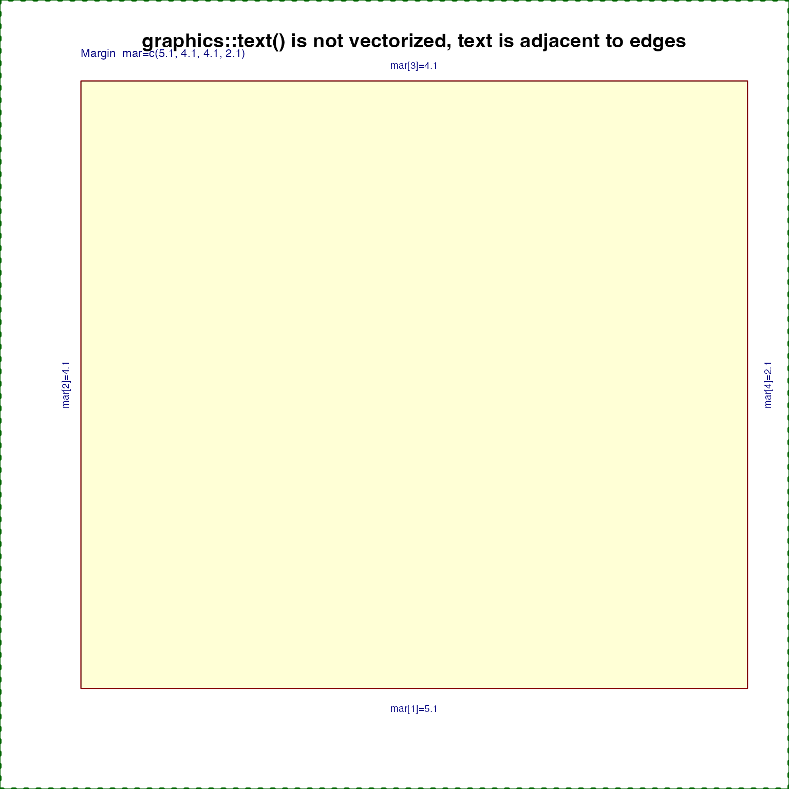
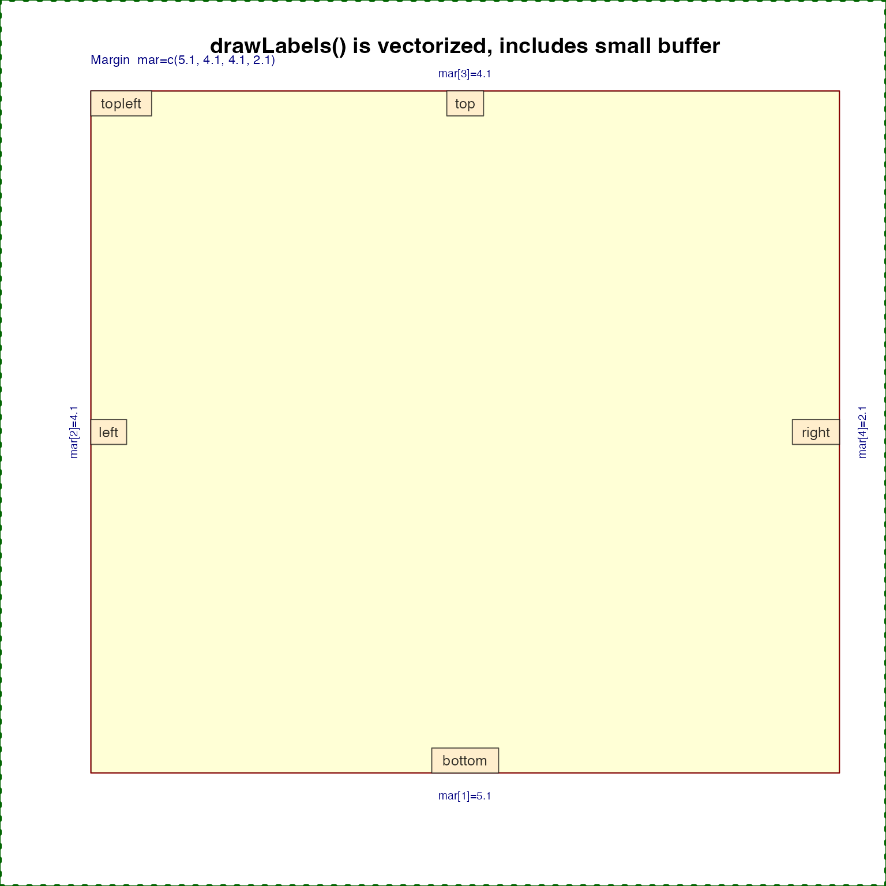

Process coordinate adjustment presets
coordPresets( preset = "default", x = 0, y = 0, adjPreset = "default", adjX = 0.5, adjY = 0.5, adjOffsetX = 0, adjOffsetY = 0, verbose = FALSE, ... )
| preset | character vector of coordinate positions, or "default"
to use the |
|---|---|
| x, y | numeric vectors indicating the default coordinates |
| adjPreset | character vector of text label positions, or
"default" to use |
| adjX, adjY | numeric vectors indicating default text adjustment
values, as described for |
| adjOffsetX, adjOffsetY | numeric vector used to apply an offset
value to the |
| verbose | logical indicating whether to print verbose output. |
| ... | additional arguments are ignored. |
data.frame with colnames x,y,adjX,adjY,preset,adjPreset
after adjustment, where the number of rows is determined by the
longest input argument.
This function is intended to be a convenient way to define coordinates using preset terms like "topleft", "bottom", "center".
Similarly, it is intended to help define corresponding text
adjustments, using adj compatible with graphics::text(),
using preset terms like "bottomright", "center".
When preset is "default", the original x,y coordinates
are used. Otherwise the x,y coordinates are defined using the
plot region coordinates, where "left" uses par("usr")[1],
and "top" uses par("usr")[4].
When adjPreset is "default" it will use the preset to
define a reciprocal text placement. For example when preset="topright"
the text placement will be equivalent to adjPreset="bottomleft".
The adjPreset terms "top", "bottom", "right", "left",
and "center" refer to the text label placement relative to
x,y coordinate.
If both preset="default" and adjPreset="default" the original
adjX,adjY values are returned.
The function is vectorized, and uses the longest input argument,
so one can supply a vector of preset and it will return coordinates
and adjustments of length equal to the input preset vector.
The preset value takes priority over the supplied x,y coordinates.
Other jam plot functions:
adjustAxisLabelMargins(),
decideMfrow(),
drawLabels(),
getPlotAspect(),
groupedAxis(),
imageByColors(),
imageDefault(),
minorLogTicksAxis(),
nullPlot(),
plotPolygonDensity(),
plotSmoothScatter(),
shadowText(),
showColors(),
smoothScatterJam(),
sqrtAxis(),
usrBox()
# determine coordinates presetV <- c("top","bottom","left","right", "topleft"); cp1 <- coordPresets(preset=presetV); cp1;#> x y adjX adjY preset adjPreset #> 1 1.50 2.04 0.5 1.0 top default #> 2 1.50 0.96 0.5 0.0 bottom default #> 3 0.96 1.50 0.0 0.5 left default #> 4 2.04 1.50 1.0 0.5 right default #> 5 0.96 2.04 0.0 1.0 topleft default# unfortunately graphics::text() does not have vectorized adj for (i in seq_along(presetV)) { text(cp1$x[i], cp1$y[i], labels=presetV[i], adj=c(cp1$adjX[i], cp1$adjY[i])); }presetV2 <- c("topleft", "topright", "bottomleft", "bottomright"); cp2 <- coordPresets(preset="center", adjPreset=presetV2, adjOffsetX=0.1, adjOffsetY=0.4); points(cp2$x, cp2$y, pch=20, cex=2, col="red");drawLabels(x=cp2$x, y=cp2$y, adjX=cp2$adjX, adjY=cp2$adjY, txt=presetV2, boxCexAdjust=c(1.15,1.6), labelCex=1.3, lx=rep(1.5, 4), ly=rep(1.5, 4))